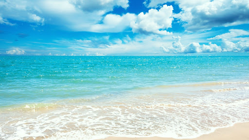
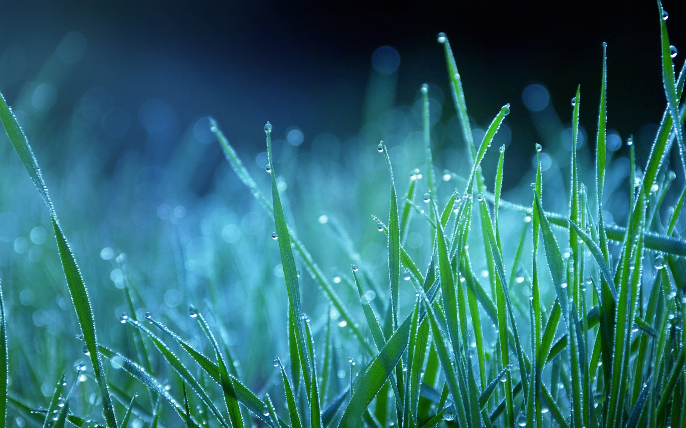

About Tamil Nadu
Udhagamandalam (Ooty), the "Queen of hill stations" is the capital of Nilgiri district. It is one of the Best tourist resorts and is called as "Blue Mountains". It is a land of dreams and a picturesque hill station. It is situated at a distance of 105 km away from Coimbatore. The height of the hills in the Nilgiri range varies between 2280 and 2290 meters, the highest peak being Doddabetta at a height of 2623 meters.
This famous hill station is at the junction of Tamil Nadu, Kerala and Karnataka, three southern states of India. British founded this hill resort which seemed them as their summer headquarters. Before that time, the area was inhabited by Todas. These tribal people still inhabit the area, but only around 3000 remain.
What was once a getaway from the steamy summers of the plains for the British elite of the Madras Presidency is now a hill station that caters to weekend holidaymakers from all over the South of India and honeymooners from across the country.
|
|
There's something special about the former British settlement of Ooty, nestled among the magnificent blue mountains of southern India. It attracts tourists, adventurers, honeymooners, and the film industry like bees to nectar year after year. Many smart travellers say that Ooty is a dump, a deteriorated, over-rated hill station, and so forth. Nonetheless, the wiser will realise how Ooty may calm frayed nerves and serve as the backdrop for a magical vacation. Ooty is tucked away in an amphitheatre formed by four beautiful hills
The great charm of Ooty is not so much the specific tourist destination; it is, in fact, the long lovely walks that it offers. Anywhere you go, the serenity of the Nilgiris will be all around you. Specially the strategic points from where one could either see Ooty or the view all around, like Snow don, Ketty Valley, the Wenlock Downs and, of course, Doddabetta. Further, one could hire a horse either near the boathouse or at the Savoy. for a slightly more exhilarating excursion in and around town.
Best Time to Visit - Kanyakumari
Summer |
Monsoon |
Winter |
|---|---|---|
|

The best time to visit Ooty hill station is during the summer. Days can be a little hot, particularly in the afternoons, with an average temperature of around 25°C. The heat is tolerable at other times. The rains help to keep Ooty cool by removing some of the sun and at night, it gets cold enough for you to put on some warm clothing. |

Monsoon season isn't the best time to visit Ooty with family if you want to see as many tourist attractions as possible. If you want to see as much of Ooty as possible during your stay, the monsoons can be a total party pooper. The best time to visit Ooty if you are a nature lover is during the monsoon. |
In Ooty, winter is a whole new ballgame. Despite the fact that treks and adventure sports are likely to be closed due to visibility and safety concerns, you can still visit all of the other iconic tourist destinations. Adventure in Ooty isn't possible in the winter due to temperatures ranging from 5 to 17 degrees Celsius and poor visibility. |
Thus Ooty is not necessarily the definition of Best Time to Visit because it is excellent to visit any time of the year, according to your requirements.
Explore Ooty

History |
Sights to |

Delicious Dishes |
Restaurents |
How to Reach Ooty
AirThe Coimbatore International Airport is at a distance of 88 km from Ootacamund. One can take a cab from there. |
RailOotacamund's nearest railway station is in Mettupalayam, 47 km away. |
RoadWell-constructed roads and motorable national highways connect Ootacamund to most cities of South India. Bus, taxis, cars, are all available on rent. |